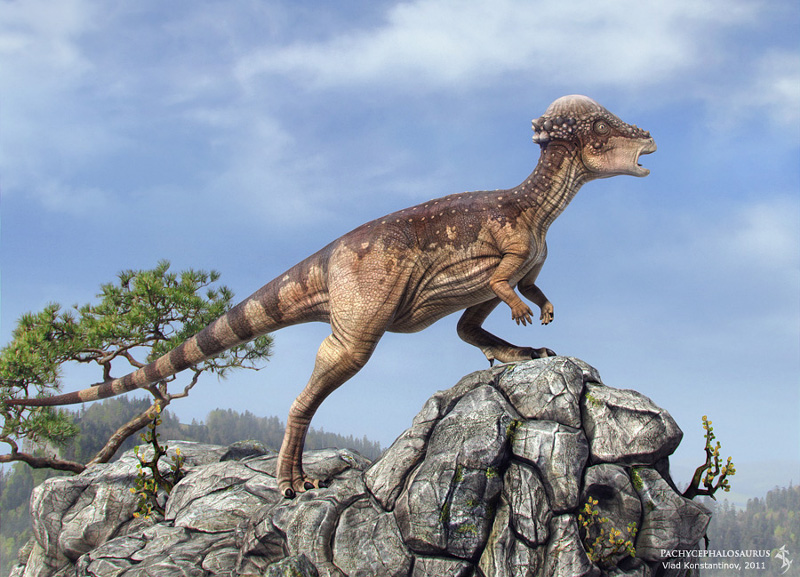
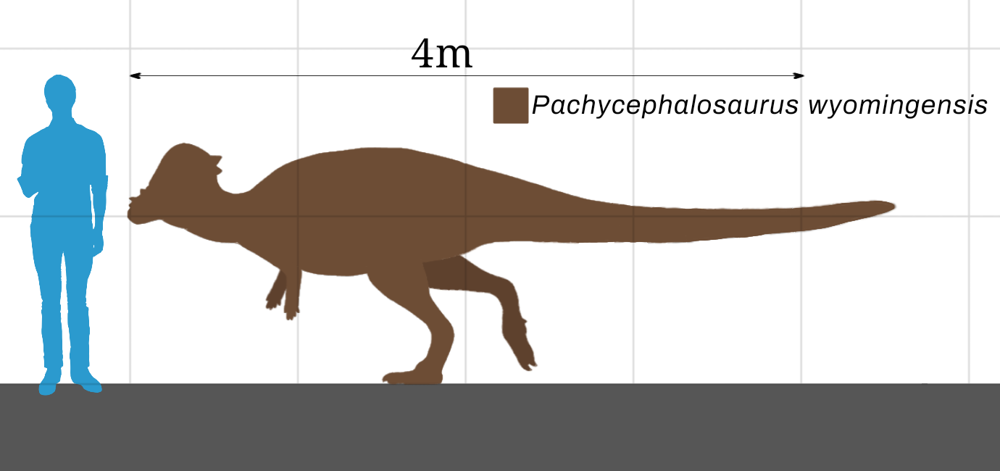
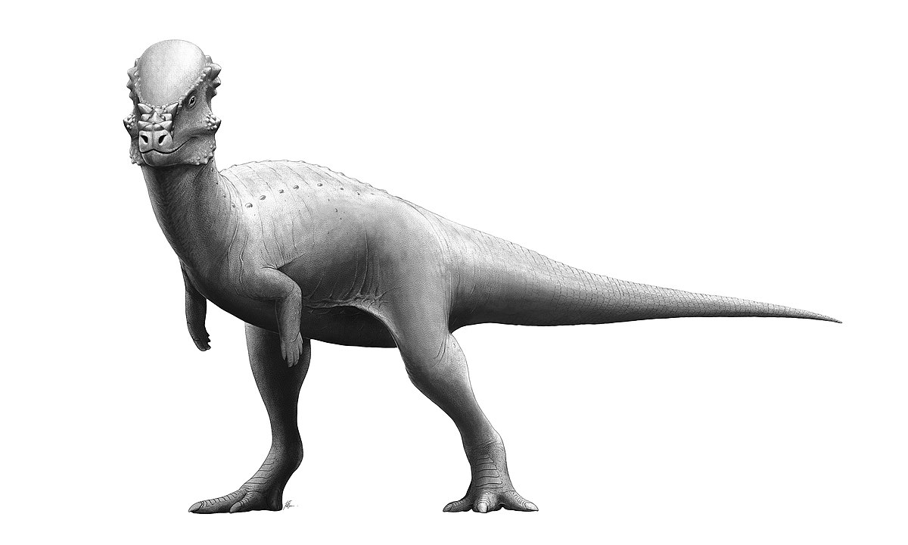
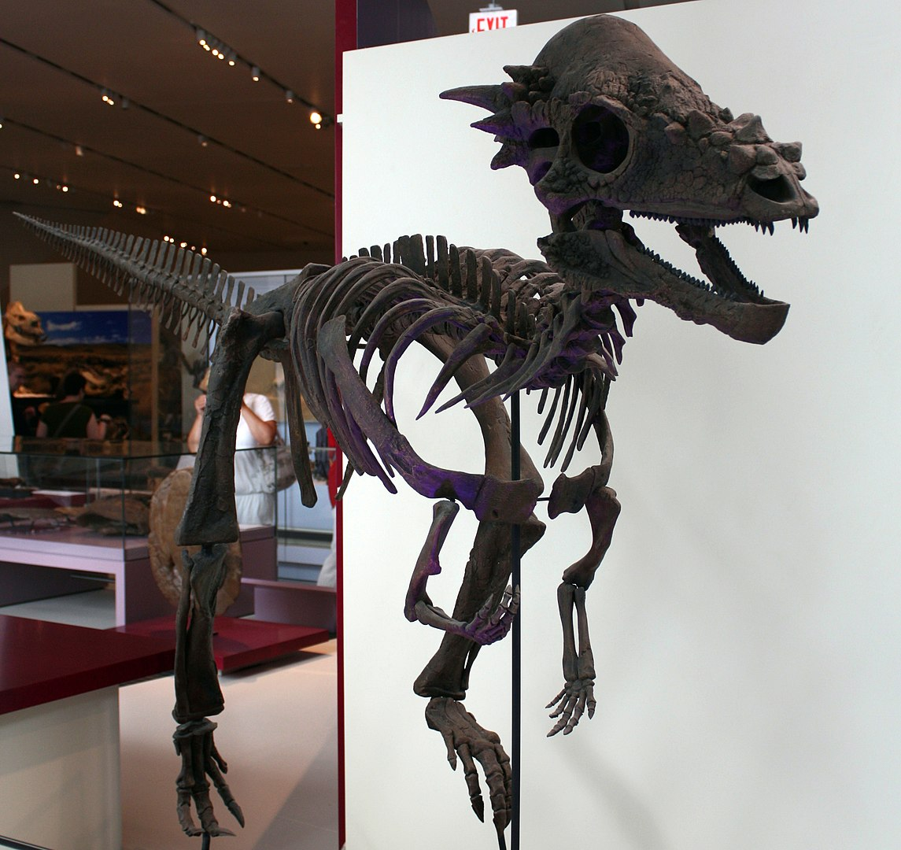
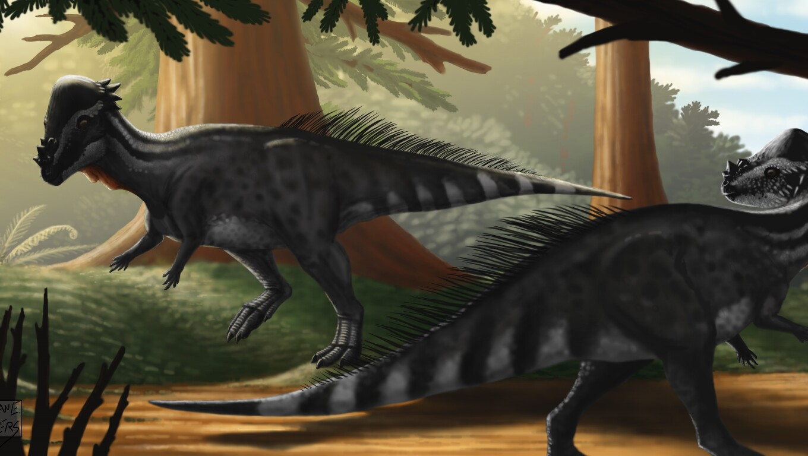
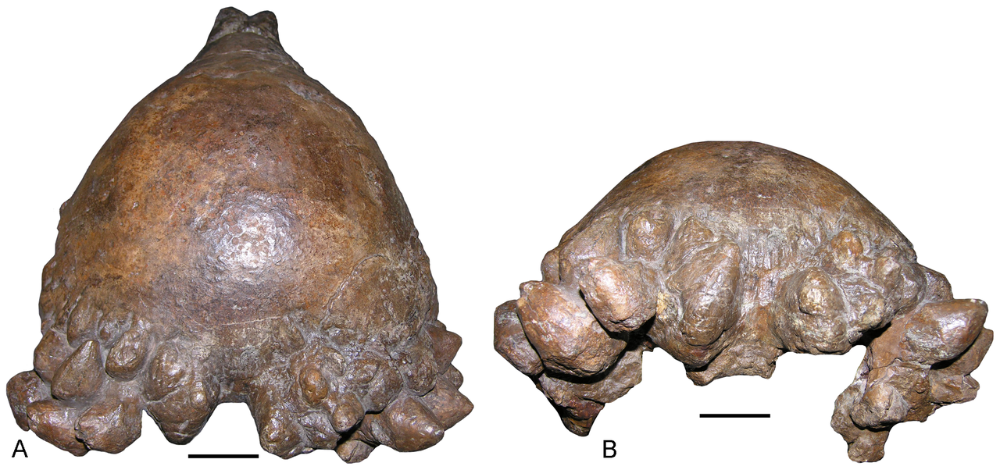
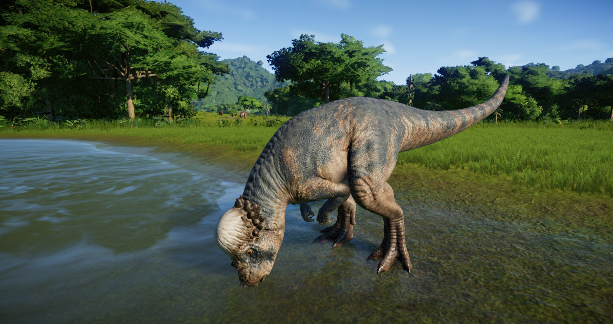
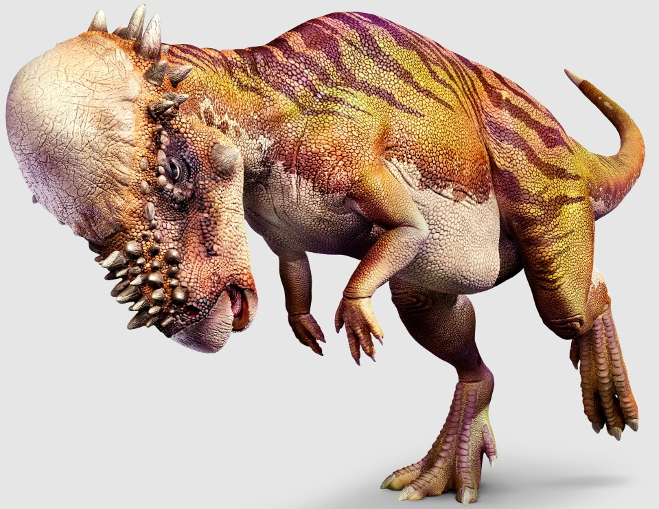
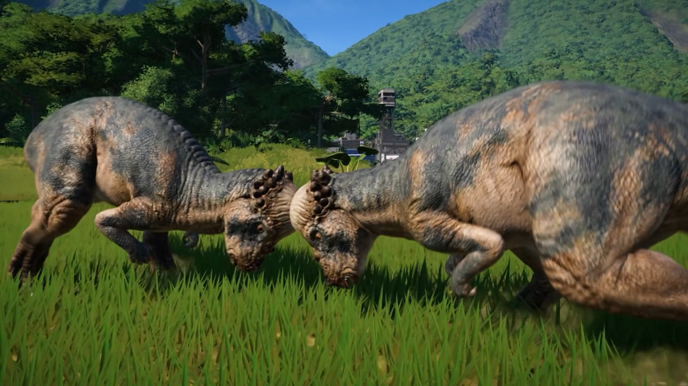

Pachycephalosaurus
Khủng long đầu hói kỷ Phấn trắng
Tổng quan
Kỷ
Cretaceous
Họ
Pachycephalosauridae
Chi
Pachycephalosaurus
Dài
5 m
Nặng
7.25 t
Môi trường
Pachycephalosaurus là một chi khủng long đầu vòm sống vào cuối kỷ Phấn Trắng ở khu vực hiện nay là Bắc Mỹ. Giống như hầu hết các chi khủng long khác, Pachycephalosaurus chỉ có một loài duy nhất: P. wyomingensis.
Nguồn: wikipedia.org
Phân bố
Khu vực Bắc Mỹ
Thông tin thêm về Pachycephalosaurus
Tên khoa học
Được đặt tên bởi Brown và Schlaikjer (1943), theo tiếng Hy Lạp cổ có nghĩa là "thằn lằn đầu dày", trong đó từ nguyên Hy Lạp pachys-/παχυς- là "dày", kephale/κεφαλη là "đầu" và sauros/σαυρος là "thằn lằn".
Kích thước
Khá lớn: Pachycephalosaurus có chiều dài khoảng 4-6 mét và nặng khoảng 450-1000 kg.
Kỷ nguyên: Đầu kỷ Creta
Chúng sống khoảng 70~66 triệu năm trước ở kỷ Upper Cretaceous.
Sự tuyệt chủng
Pachycephalosaurus đã tuyệt chủng vào cuối kỷ Phấn Trắng (khoảng 66 triệu năm trước) trong thời kỳ đầu của kỷ Tân sống lại (Maastrichtian). Pachycephalosaurus là một trong những loài khủng long cuối cùng sống trên Trái Đất trước khi bị tuyệt chủng cùng với các loài khủng long khác vào cuối thời kỳ Kỷ Phấn Trắng, có lẽ do sự kiện tuyệt chủng hàng loạt nhưng vẫn đang tranh luận giữa các nhà khoa học.
Phân bố: Khu vực Bắc Mỹ
Chủ yếu là ở vùng phía tây Hoa Kỳ, bao gồm Montana, South Dakota và Wyoming. Tuy nhiên, cũng có một số hóa thạch Pachycephalosaurus được tìm thấy ở Canada.
Khám phá
Hóa thạch có khả năng là của Pachycephalosaurus có thể đã được tìm thấy sớm nhất vào thập niên 1850. Chi này chủ yếu được biết đến qua một mẫu sọ duy nhất và một vài nóc sọ cực dày đào được tại Montana, South Dakota và Wyoming; mặc dù đã tìm thấy hóa thạch hoàn chỉnh hơn trong những năm gần đây.
Năm 1943, Barnum Brown và Erich Maren Schlaikjer đã phân Pachycephalosaurus thành hai loài: P. grangeri thuộc hệ tầng Hell Creek, Montana và P. reinheimeri từ hệ tầng Lance, South Dakota. Cả hai loài sau đó đã được gộp chung thành P. wyomingensis năm 1983.
Chế độ ăn
Pachycephalosaurs được cho là đã sống trong các khu rừng và thảo nguyên, ăn thực vật và có lẽ cả côn trùng.
Ngoại hình
Đặc điểm nổi bật của chi này là một "mái vòm" xương lớn trên hộp sọ, những con đực có lớp xương dày tới 25 cm! Con cái có lớp xương mỏng hơn, đặt trên nóc sọ giúp bảo vệ cho bộ não rất nhỏ phía dưới.Sọ ngắn. Hai ổ mắt tròn to, hướng về trước, chỉ ra rằng con vật có thị lực tốt và có tầm nhìn lưỡng thị. Mõm thon, gọn, chụm lại thành một cái mỏ nhọn. Răng rất nhỏ, mào răng dạng hình lá. Cổ dáng chữ "S" hoặc "U".
Lởm chởm phía sau mái vòm là những cục u xương nhỏ, bên trên mũi thì có những gai xương ngắn, cùn, không sắc chĩa lên. Có lẽ đi bằng hai chân.
Bạn có biết?
Mặc dù đầu của Pachycephalosaurus là rất cứng và chắc chắn, nhiều nhà khoa học tin rằng chúng không được sử dụng để tấn công hoặc phòng thủ như một loài khủng long khác có vỏ đầu cứng. Thay vào đó, đầu của Pachycephalosaurus có thể được sử dụng để phản chiếu âm thanh và giao tiếp giữa các con cái trong đàn hoặc để xác định đối thủ trong các cuộc chiến đấu giữa các con đực.
Ngoài ra, những con khủng long đầu hói còn dùng đầu để gây ấn tượng với đồng loại của nó.